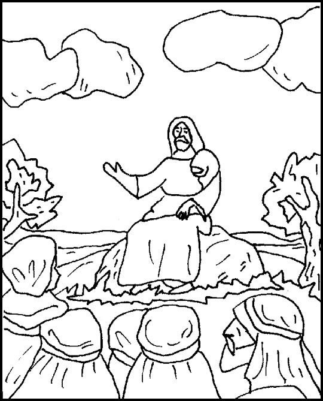
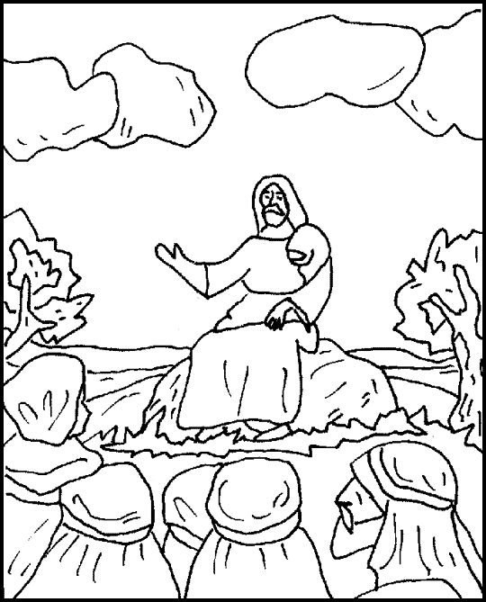

Read the lessons at the Vanderbilt Library website: http://divinity.lib.vanderbilt.edu/lectionary/cEpiphany/cEpiphany6.htm.htm
Read
the lessons at the Vanderbilt Library website:
http://divinity.lib.vanderbilt.edu/lectionary/cEpiphany/cEpiphany6.htm.htm